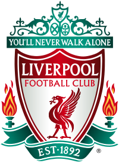

ლივერპულის საფეხბურთო კლუბი პროფესიონალური საფეხბურთო კლუბია, რომლის სათაო ოფისიც ლივერპულში, ინგლისში მდებარეობს. კლუბი ასპარეზობს პრემიერ ლიგაში, ინგლისური ფეხბურთის უმაღლეს საფეხბურთო ლიგაში. დაარსდა 1892 წელს, მომდევნო წელს შეუერთდა საფეხბურთო ლიგას და დაარსების დღიდან საშინაო თამაშებს ენფილდზე ატარებს. ლივერპული მსოფლიოში ერთ-ერთი ყველაზე ღირებული და ფართოდ მხარდაჭერილი კლუბია. შიდა ჩემპიონატზე კლუბმა მოიგო ოცი ლიგის ტიტული, რვა FA თასი, რეკორდული ათი ლიგის თასი და თექვსმეტი FA Community Shield. საერთაშორისო შეჯიბრებებში კლუბმა მოიგო ექვსი ევროპის თასი, სამი უეფას თასი, ოთხი უეფას სუპერ თასი - ყველა ინგლისური რეკორდი - და ერთი ფიფას საკლუბო მსოფლიო თასი. ლივერპულმა თავი დაიმკვიდრა, როგორც მთავარმა ძალამ შიდა ფეხბურთში 1960-იან წლებში ბილ შენკლის ხელმძღვანელობით, სანამ ბობ პეისლის, ჯო ფეიგანის და კენი დალგლიშის ხელმძღვანელობით სამშობლოში და მის ფარგლებს გარეთ ტიტულის მუდმივი პრეტენდენტი გახდებოდა, რომლებმაც კლუბი 1970-იან და 80-იან წლებში ჯამში თერთმეტი ლიგის ტიტულისა და ოთხი ევროპის თასის მოგებამდე მიიყვანა. ლივერპულმა კიდევ ორი ევროპული თასი მოიგო, შესაბამისად, 2005 და 2019 წლებში, რაფაელ ბენიტესისა და იურგენ კლოპის ხელმძღვანელობით; ამ უკანასკნელმა ლივერპული 2020 წელს მეცხრამეტე ლიგის ტიტულამდე მიიყვანა, რაც კლუბის პირველი გამარჯვება იყო პრემიერ ლიგის ეპოქაში. კლოპის 2024 წელს წასვლის შემდეგ, არნე სლოტმა ლივერპული 2025 წელს მეოცე ლიგის ტიტულამდე მიიყვანა. უკვე მეტსახელად „წითლები“ შეარქვეს და სწორედ შენკლის ხელმძღვანელობით მიიღო გუნდმა პირველად გამორჩეული, მთლიანად წითელი საშინაო ფორმა, რომელიც მას შემდეგ გამოიყენება. შენკლის ხელმძღვანელობით ასევე მიიღეს კლუბის ჰიმნი „შენ არასდროს ივლი მარტო“. „წითლები“ ადგილობრივ მერსისაიდულ დერბიში ევერტონის წინააღმდეგ ასპარეზობენ, რომელსაც ხშირად „ლურჯებს“ უწოდებენ. როგორც ინგლისის ორი ყველაზე ტიტულოვანი კლუბი და ქალაქებს შორის მეტოქე, ლივერპულს ასევე დიდი ხნის მეტოქეობა აქვს „მანჩესტერ იუნაიტედთან“. კლუბის გულშემატკივრები ორ დიდ ტრაგედიაში იყვნენ ჩართულნი. 1985 წელს ბრიუსელში გამართულ ევროპის თასის ფინალში, „ჰეიზელის“ სტადიონზე მომხდარი კატასტროფის შედეგად 39 გულშემატკივარი - ძირითადად მეტოქე „იუვენტუსის“ იტალიელი გულშემატკივრები - დაიღუპა მას შემდეგ, რაც ისინი „ლივერპულის“ გულშემატკივრებსა და ბეტონის კედელს შორის შეჯახების შედეგად დაიშალნენ, რომელიც შემდგომ ჩამოინგრა. მუდმივი ხულიგნობის შედეგად, ინგლისურ გუნდებს თავდაპირველად განუსაზღვრელი ვადით, მაგრამ საბოლოოდ ხუთი წლით, ხოლო „ლივერპულს“ კიდევ ერთი წლით აეკრძალათ ევროპული საკლუბო შეჯიბრებები. 1989 წელს ჰილსბოროს კატასტროფამ „ლივერპულის“ 97 გულშემატკივრის სიცოცხლე შეიწირა, მას შემდეგ, რაც პოლიციის უხეში დაუდევრობის გამო გულშემატკივრებს შორის შეხლა-შემოხლა გამოიწვია; კატასტროფის შედეგად, ინგლისური ფეხბურთის ორ უმაღლეს ლიგაში შემოღობილი ტერასები მთლიანად დასაჯდომი ადგილებით აღჭურვილი სტადიონების სასარგებლოდ გაუქმდა. ჰილსბოროს საქმეზე სამართლიანობისთვის ათწლეულების განმავლობაში მიმდინარე კამპანიამ შემდგომი კორონერების, კომისიებისა და დამოუკიდებელი პანელების მეშვეობით გულშემატკივრები ყველა ბრალეულობისგან გაამართლა.
